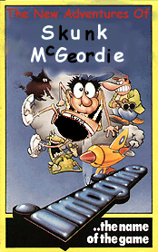
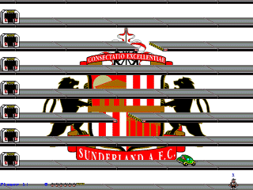
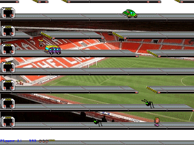
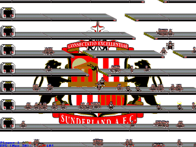
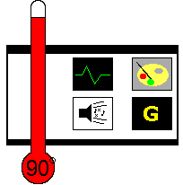

|
Jumping Jack 2 Chucklepie Productions, 1999 |
| Football's never really been my thing. I used to play it a little at school, for a while, in the playground, but pretty soon we were forced to play it in the harshest of weather conditions, wearing shorts, and we were expected to be competitive and want to beat the other team using any means deemed necessary, despite the fact that the members of the other team were up until the start of the match our friends. While these expectations were met by most of the other players, who were quite happy to perform Bruce Lee impersonations while tackling, there were those of us who desired nothing more than to go home and do something vaguely constructive. I can still remember one match in which no less than six of us, members of opposing teams, decided to sit by one goalmouth and commentate on the the tactics of the other players. Spectating, of course, is something quite different. I've never had a problem sitting in front of the TV and watching a footie match, provided it's halfway interesting. International matches, for instance, at least until England are knocked out of the competition. But while I have the concentration to follow one-off games, I certainly couldn't doggedly follow a single team's progress from game to game, year to year. |  |
| Skunk McGeordie has a slightly different problem. He has the determination to follow a team, but unfortunately has, by accident of birth, been forced to support his home team of Newcastle United. While he has dutifully attended their abysmal matches for years on end, his heart has always lain with Sunderland. Finally, he snaps, and decides that he can no longer support Newcastle. He will become... a Sunderland supporter. There is only one way for him to achieve his life's ambition, and that is for him to progress through nine levels of platform action. Obviously. |  |
|  | As in the original Jumping Jack, progress is made by jumping through holes to the platform above. That in itself would be easy, were it not for the fact that the holes move, and often while waiting for a hole to appear above you one will appear below you, casting you to the platform below to land in a stunned heap, where usually another hole will slide beneath you and throw you down again, and so on until you hit the ground and lose a life. |
|
|
Apparently Neil Walker found the original formula a tad too easy, and so he's added some bad guys to the equation. These will stun players for a few seconds, usually enough time for another hole to catch up with you. But to even the odds there are also 'safe zones'. Pressing the action key will transport you magically into them, where you cannot be harmed but can, if they're armed, throw fireballs across the screen. Surrealist features like this are rife, with Alan Shearer-lookalikes ballet-dancing across the screen, giant spiders, and trucks bearing the Retrospec logo. The graphics are consistently bright and cartoony, and while the animation is minimal, it does the job perfectly. |
|  | Best of all, though, JJ2 has a multiplayer mode. Up to four players can challenge each other in Deathmatch Mode, which is where those fireballs really come into play. For the friendless among you, you'll probably appreciate the computer-controlled players. You can play Deathmatch against up to 200 (!) of the things, although you'll need a better PC than mine to do it in SVGA mode. This is a fine game, and a great way to waste a few hours, especially with some mates. Although it'd be a good idea to make sure they're not Newcastle supporters first. |
|  |
Graphics: 80° Cartoony little sprites, some nice backgrounds really add to the atmosphere. Sound: 75° Some neat effects, although the MIDI music didn't seem to work (probably my PC being crap, though). Gameplay: 90° Clever incentive for getting further in single-player, and the multiplayer mode means this game'll stay around for ages. Gamelife: 85° A simple control system makes JJ2 easy to get into, and once you're in, you'll be in for a long time. Summary: A simple game, smartly-executed, with some great humour (if you're not a Newcastle supporter!). Marvy. Nathan Cross |
| Back to Contents |